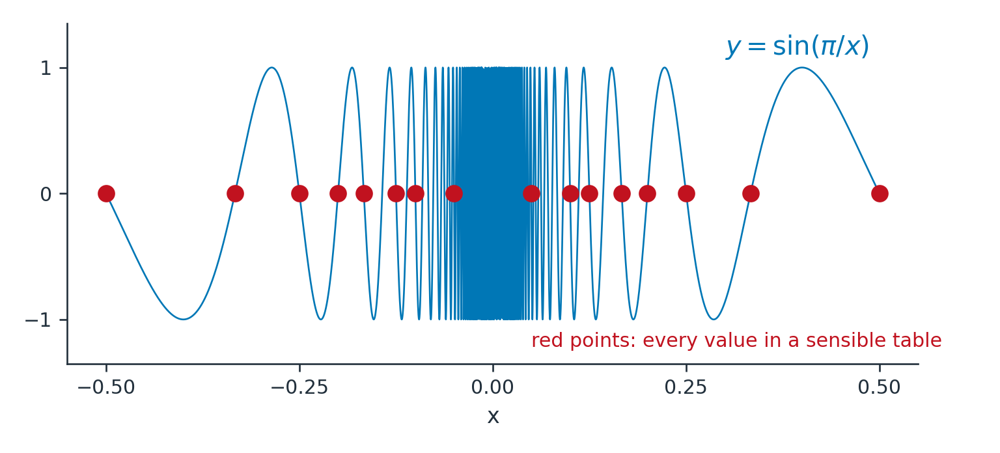

Section 2.2: The Limit of a Function
MTH 207 — Calculus I | Limits and Derivatives
What Section 2.1 Owed Us
Two problems, one answer. The tangent slope and the instantaneous velocity both
came out as the same move: compute something you can on an interval, then
shrink the interval.
Both times we said the numbers “pile up near” a value and moved on.
Estimating a Limit from a Table
Consider \(f(x) = \dfrac{x^2-1}{x-1}\).
Notice. \(f(1)\) does not exist — division by zero.
We cannot plug in, but we can look nearby.
| \(x\) | \(0.9\) | \(0.99\) | \(0.999\) | \(1.001\) | \(1.01\) | \(1.1\) |
|---|---|---|---|---|---|---|
| \(f(x)\) |
From the left: \(1.9\), \(1.99\), \(1.999\). From the right: \(2.001\), \(2.01\), \(2.1\).
Here it is filled in:
| \(x\) | \(0.9\) | \(0.99\) | \(0.999\) | \(1.001\) | \(1.01\) | \(1.1\) |
|---|---|---|---|---|---|---|
| \(f(x)\) | \(1.9\) | \(1.99\) | \(1.999\) | \(2.001\) | \(2.01\) | \(2.1\) |
What a Limit Means
Limit of a function
We write \(\lim_{x \to a} f(x) = L\) if we can make the values of \(f(x)\) as close
to \(L\) as we like by taking \(x\) close enough to \(a\), but not equal to \(a\).
Read the last four words again. They are doing all the work.
- The limit does not care whether \(f(a)\) exists.
- If \(f(a)\) does exist, the limit does not care what it equals.
Reading Limits off a Graph

\[\text{At } x=1:\quad \lim_{x\to1}f(x) = 2, \qquad f(1) = 3.2\]
\[\text{At } x=3:\quad \lim_{x\to3}f(x) \ \mathbf{\text{does not exist}}\]
\[\text{At } x=5:\quad \lim_{x\to5}f(x) = 3.5 = f(5)\]
When a Table Lies to You
A table is evidence, not proof. Here is \(f(x) = \sin(\pi/x)\) near \(0\).
Every one gives \(\sin(n\pi) = 0\). A table says the limit is \(0\).

Approaching from One Side
At \(x=3\) on Thursday's graph the limit failed — but not because nothing
happened. Two different things happened, one from each side.
One-sided limits
\(\lim_{x \to a^-} f(x) = L\) means \(f(x) \to L\) as \(x\) approaches \(a\) through
values less than \(a\). The right-hand limit \(\lim_{x \to a^+}\) uses values
greater than \(a\).
\(4\) from the left, \(2.5\) from the right.
Limits That Grow Without Bound
We write \(\lim_{x\to0} \dfrac{1}{x^2} = \infty\).
\[\text{From the right:}\quad \frac1x \to \infty\]
\[\text{From the left:}\quad \frac1x \to -\infty\]
The two sides disagree, so \(\lim_{x\to0}\frac1x\) does not exist — not even as \(\infty\).
Vertical Asymptotes
Vertical asymptote
The line \(x = a\) is a vertical asymptote of \(y=f(x)\) if at least one of the
one-sided limits at \(a\) is \(\infty\) or \(-\infty\).
Note what this does not say. It says nothing about whether \(f(a)\)
exists — only about how \(f\) behaves nearby.
\[\text{Denominator} = 0 \text{ at } x = 2 \text{ and } x = -3\]
\[\text{Just right of } 2:\quad x+1 \approx 3 > 0, \quad x-2 = \text{small} > 0, \quad x+3 \approx 5 > 0\]
\[\text{All three positive, so } f \to +\infty\]
Where This Goes
We can now estimate a limit from a table or a graph, and say precisely when one
fails to exist.
What we can do
Read a limit off a picture. Recognise a jump, a hole, an oscillation, an asymptote.
What we cannot do yet
Compute a limit exactly, from a formula, without guessing from numbers.
Next
Section 2.3 — the limit laws, which turn all of this into algebra.
What You Should Be Able to Do
By the end of this section — and on the quiz and the exam:
- I can estimate a limit from a table or a graph, and explain why the value of the function at the point does not affect it.
- I can decide whether a two-sided limit exists by comparing the one-sided limits.
- I can recognise an infinite limit and locate the vertical asymptotes of a function.
- I can explain how a table of values or a calculator can mislead me about a limit.